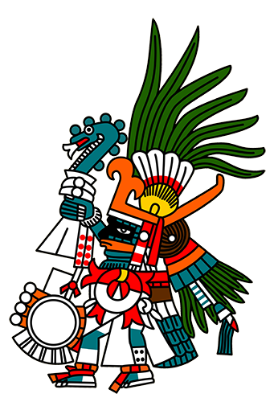

Before existence there was nothing. But, suddenly from the nothing, came Ōmeteōtl, the first of the gods. Ōmeteōtl was both male and female, light and dark, good and evil, fire and water, judgement and forgiveness. They were the God of Duality. Ōmeteōtl resided in the highest level of the Thirteen Heavens, a place called Ōmeyōcān. Ōmeteōtl had four sons, the four Tezcatlipōcas who would reign over the four corners of the world.
The White Tezcatlipōca, Quetzacōatl The Feathered Serpent, God of light, justice, mercy and wind, presided over the West.

The Blue Tezcatlipōca, Huītzilōpōchtli The Left Handed Humming Bird, God of War, presided over The South.
The Red Tezcatlipōca, Xīpe Totēc The Flayed Lord, God of Gold, farming and Spring Time, presided over The East.
And finally The Black Tezcatlipōca, known simply as Tezcatlipōca The Smoking Mirror, God of Judgment, night, deceit, sorcery and the Earth, presided over The North.
It was these four Tezcatlipōcas, who would go to create all other gods.
However every time they would try to create something it would fall into the ocean below them and get swallowed by Cipactli,
a giant monster who was part crocodile, part fish and part frog, with mouths on every one of her joints.
Quetzacōatl and Tezcatlipōca descended down to the ocean in a boat to slay Cipactli, but when they arrived she was nowhere to be found.
Tezcatlipōca thought to use his foot as bait to lure Cipactli to the surface. Cipactli returned to the service, severing Tezcatlipōca’s foot,
but in the end, the two brothers were victorious, slaying Cipactli and with the other two Tezcatlipōcas built The Thirteen Heavens and The Earth from Cipactli’s corpse.
Now that The Earth had been created the gods descended down the first people, The Giants.
The four Tezcatlipōcas created all the other Gods and placed them in The Thirteen Heavens.
There were two Gods who were more important than the others in helping to help shape the world, Tlāloc the God of rain, earthly fertility and water.
Tlāloc was widely seen as a giver of life.
The second important god was Chālchiuhtlicue, She of the Jade Skirt, Patroness of Childbirth, Goddess of water, rivers, seas, streams, storms and baptism.
They needed to give humanity light. In order to do this one of them would have to become the Sun.
Tezcatlipōca was chosen, but whether because he was a God of Night or because he was missing a foot, he only succeeded in becoming half of a Sun.
The Earth continued in this dim light for a while, but a sibling rivalry grew between Tezcatlipōca and Quetzacōatl, a rivalry that would last till the end of time.
Quetzacōatl eventually knocked Tezcatlipōca out of the sky with a stone club, as a result the world fell dark, without a sun.
Tezcatlipōca in his rage unleashed his jaguars on the world, who ate all the people on the Earth.
The Gods created new people to inhabit the empty Earth, who were of normal height this time.
Quetzacōatl became the sun this time, but as time went on humanity grew less and less civilized.
They grew disrespectful and stopped showing proper honor to the gods. Quetzacōatl still loved his creation, but Tezcatlipōca was furious.
Tezcatlipōca judged humanity and with his sorcery turned everyone into monkeys.
Quetzacōatl in a fit of grief blew all the monkeys off the Earth with a hurricane and stepped down as the sun. Quetzacōatl stepped down as the sun.
This time Tlāloc became the sun. However, one day Tezcatlipōca seduced and stole Tlālocs wife Xōchiquetzal the Goddess of corn, flowers and sex.
Tlāloc fell into a state of depression and as a result the world fell into a drought.
The people of the Earth prayed and begged Tlāloc for rain but he wouldn’t answer them.
But as time went on and the prayers became more and more frequent,
Tlāloc became annoyed by the prayers and answered with a downpour of burning rain.
The entire Earth was reduced to ashes and the gods had to rebuild it from this. Tlāloc stepped down as the sun after this.
The next sun was Chālchiuhtlicue, who was also Tlālocs second wife. Chālchiuhtlicue was very kind and loving towards humanity,
however one day Tezcatlipōca approached Chālchiuhtlicue and told her that she was only faking her kindness to gain the love and respect of both humanity and the other gods.
Chālchiuhtlicue was so heartbroken over these words that she cried blood for 52 years,
causing the world to be engulfed in a horrific great flood of blood. Humanity turned into fish in order to survive.
Chālchiuhtlicue then stepped down as the sun.
Quetzacōatl who was still grieving the dealths of his people, sneaked into the underworld and stole humanity’s bones from Mictlāntēcutli.
Quetzacōatl would then dip these bones in his own blood in order to resurrect them. The sun in this age is Huītzilōpōchtli.
One day Tzitzimimeh the stars became jealous of their brother Huītzilōpōchtli the sun.
The leader of the stars Coyolxāuhqui Goddess of the Moon would lead an assault against the sun every night but would always be beaten back by Huītzilōpōchtli,
this is why we have night and day.
In order to assist Huītzilōpōchtli in this ongoing battle the Aztecs offers him human sacrifices.
They also offer sacrifices to Tezcatlipōca out of fear of his judgment, they also offer sacrifices to Quetzacōatl as a thanks for resurrecting them.
Should these sacrifices cease, the sun will be slain and the world will go black.
The world will then be destroyed by an earthquake and the Tzitzimimeh will descend from the heavens and kill all of humanity.